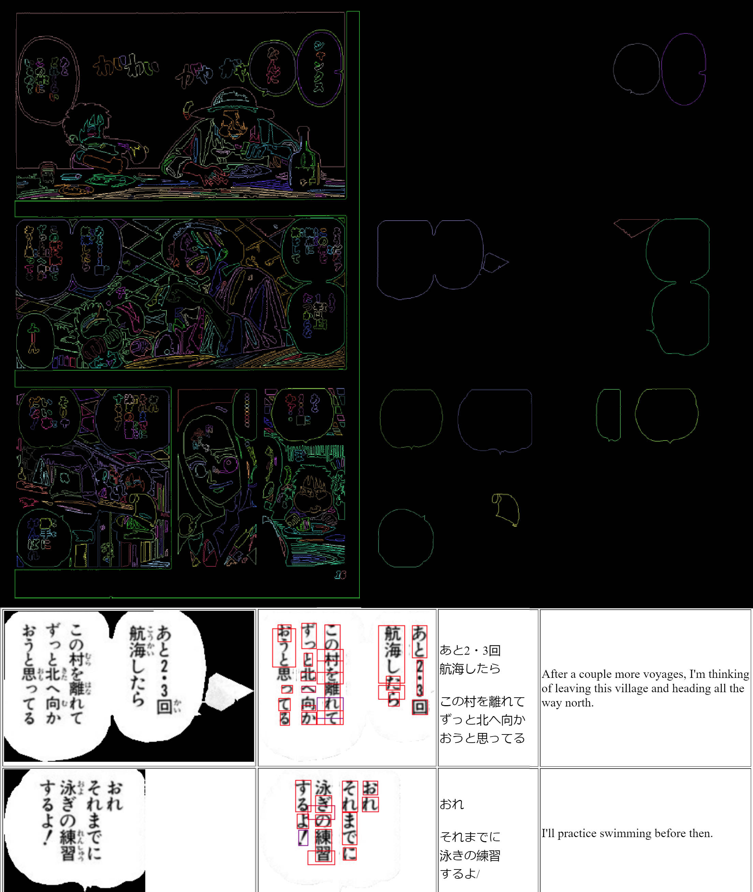
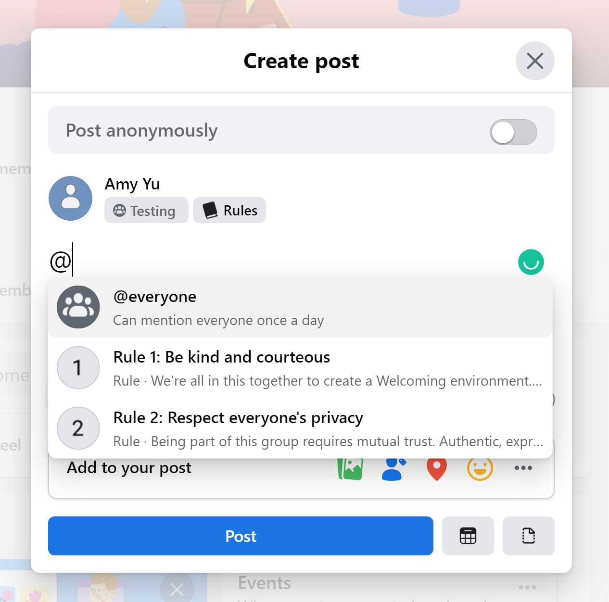
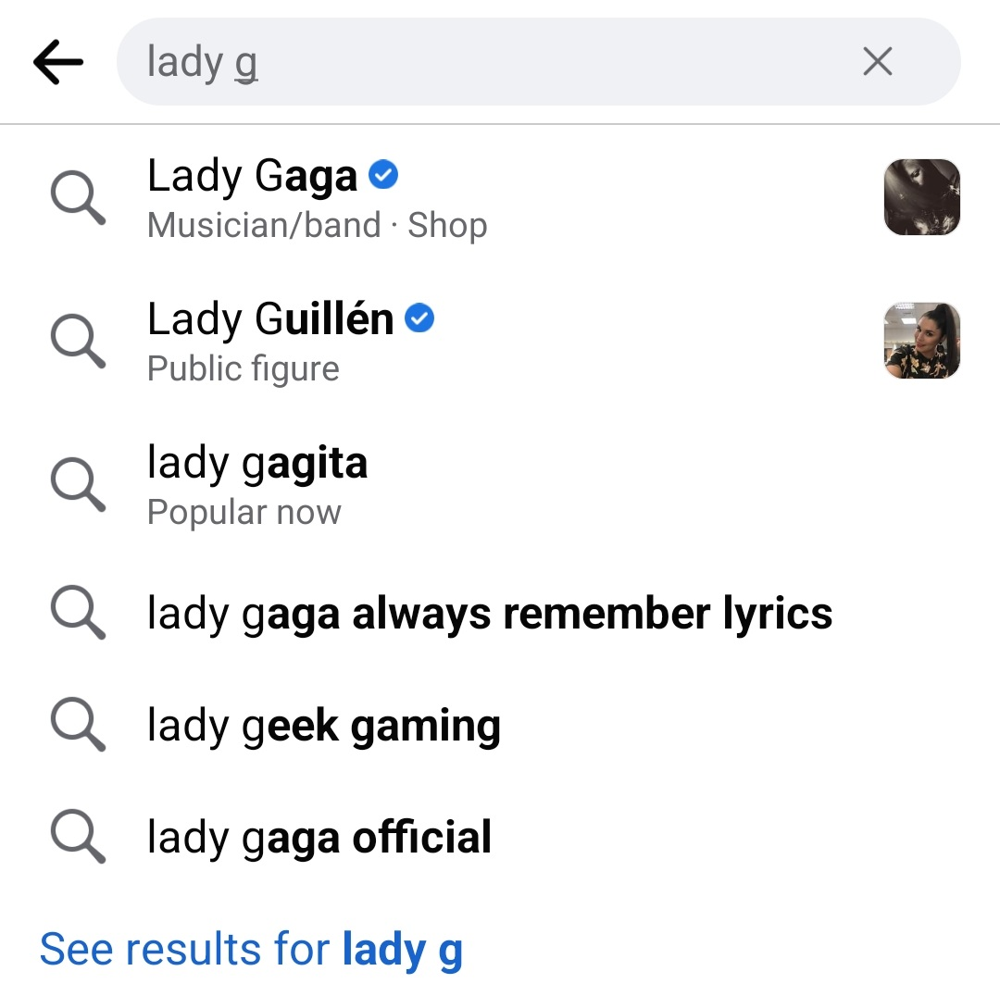
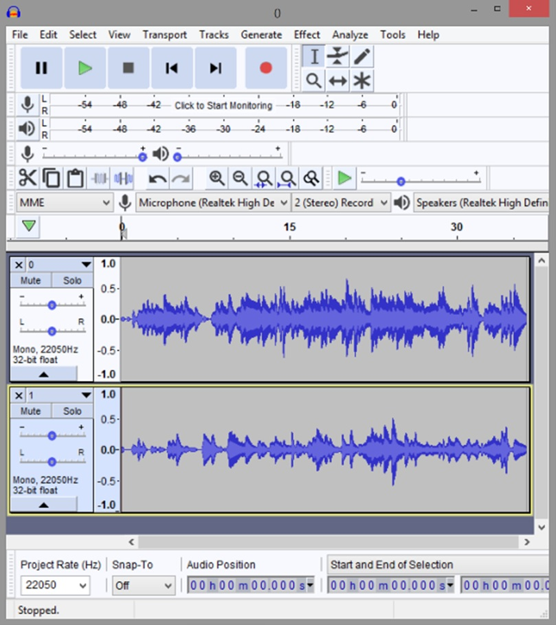
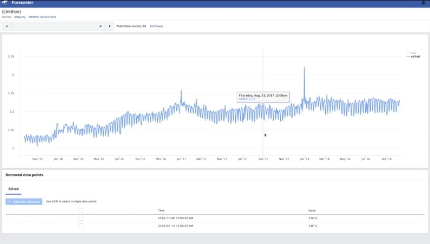
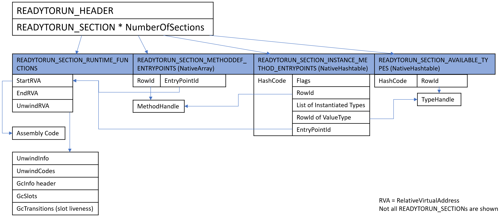

Amy Yu
Software Engineer | University of Waterloo Computer Science
Projects

Manga OCR
2022 | Personal Project
A web application to automatically translate manga pages from Japanese to English by detecting speech bubbles and extracting text. Source Code Try It

Batch Mentions
2022 | Facebook
Feature to allow users to mention multiple people at once.

Structured Typeahead Suggestions
2020 - 2021 | Facebook
Determining high confidence typeahead suggestions and decorating them with images and snippet.

Instrumentalize
Winter 2019 | CS489 Computational Audio Project
A command-line tool to transcribe a piece of music from one instrument to another Project Report


R2RDump
Spring 2018 | Microsoft
An open-source command-line tool that parses .NET ReadyToRun binary executables to display assembly code, ARM and x64 UnwindInfo, and garbage collection tables. Details Source CodeAnimator
Winter 2018 | CS488 Computer Graphics Project
An application that allows users to create animations by specifying keyframes. The models will behave according to some laws of physics, such as gravity and the conservation of momentum Details Project ReportProject Panama
Winter 2017 | IBM Canada
Native method handles for calling C/C++ methods from Java programs. Added the new feature for the IBM's J9 virtual machine which is implemented differently from Oracle's OpenJDK Project Panama. DetailsKapsel Fingerprint Unlock
Spring 2016 | SAP Canada
Used the Android 6 Fingerprint API in the Kapsel Logon plugin so that users can authenticate with their fingerprint instead of a passcode. More infoOctane Template Binding
Spring 2016 | SAP Canada
Tool for generating HandlebarJS templates used when creating index cards with SAP Octane. Provides an interface for replacing the handlebar names with the field names of the user's JSON data.Millionaire Labs Prototype
2015 | Early Stage Startup
An educational bank simulator web application with PHP for the back-end, Bootstrap for the front-end, and MySQL for the database DetailsTranspost
2013 | Red Carpet Real World Realty Inc
A Java application that extracts real estate information and uses Selenium webdriver to fill the HTML form of an advertising website DetailsECOO Contest Solutions
2013 | Educational Computing Organization of Ontario
A website that sorts, categorizes and displays ECOO contests from the last 30 years. I mainly worked on the PHP back-end, and was in charge of the part that programmatically translates Turing solutions into Java. DetailsExperience
Software Engineer
Meta (Facebook)
July 2019 – present
Software Engineering Intern
Sept 2018 – December 2018

Software Engineering Intern
Microsoft
May 2018 – August 2018
Software Engineering Intern
Cisco Meraki
September 2017 - December 2017
J9 Virtual Machine Developer Intern
IBM Canada
January 2017 - April 2017
Core Infrastructure Developer Intern
SAP Canada
May 2016 - August 2016
Web Developer Intern
Bank of Canada
September 2015 - December 2015
Education